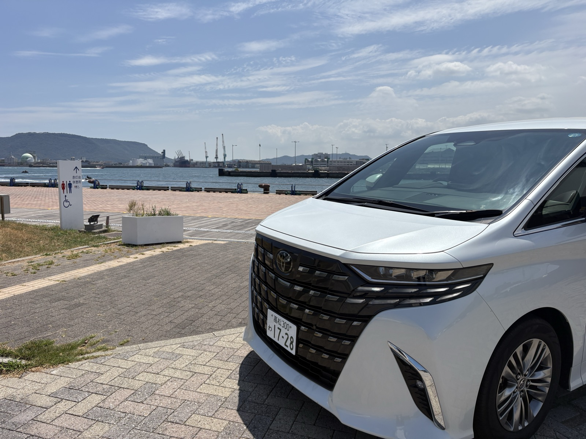

瀬戸内の島へは高松港から船で渡ります。高松空港から高松港まではレンタカーで移動し、島の回り方に合わせて車の使い方を選べます。
空車と料金を確認する| 行き先（港） | フェリー | 高速船（人のみ） |
|---|---|---|
| 小豆島（土庄港） | 約60分 | 約35分 |
| 直島（宮浦港） | 約50分 | 約30分 |
運航時刻・料金・所要時間は各船会社の公式サイトでご確認ください。季節や天候で変わることがあります。
栗林公園・屋島・こんぴらさん・うどん巡りなど本土側は車で回り、島へは人だけ高速船やフェリーで。直島は島内をバスやレンタサイクルで回る人が多い島です。
小豆島は島が大きく、寒霞渓やエンジェルロードなど見どころが離れているため、車があると回りやすくなります。レンタカーでフェリーに乗る場合は、ご予約前に店舗（050-1724-6197）へご確認ください。
高松港周辺の駐車場は有料です。帰りの便に間に合うよう、島からの船は余裕を持って選んでください。
| クラス | 車種の例 |
|---|---|
| 軽・コンパクト | タント／N-BOX／ハスラー／パッソ |
| コンパクト | ヤリス／アクア／ルーミー／ソリオ |
| コンパクトSUV | ヤリスクロス／ライズ |
| セダン／ハイブリッド | プリウス |
| SUV | ハリアー |
| コンパクトワゴン | シエンタ |
| ミニバン | ヴォクシー／ノア |
| プレミアムミニバン | アルファード／ヴェルファイア |
料金は日付・車種ごとに予約画面に表示されます。車種はクラス内からのご用意で、お選びいただけません。